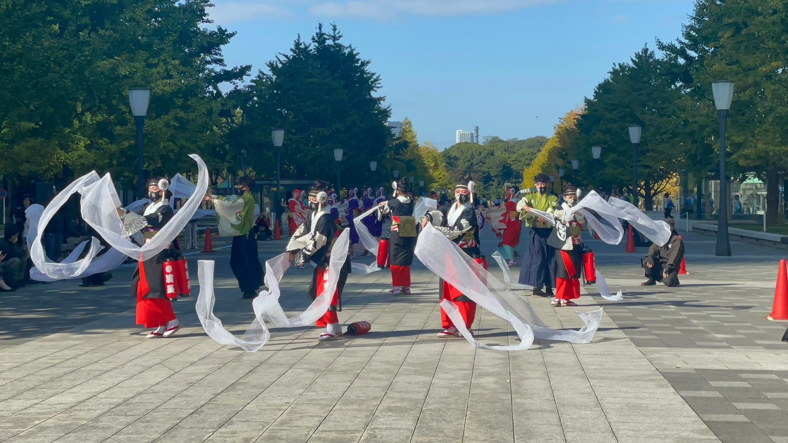
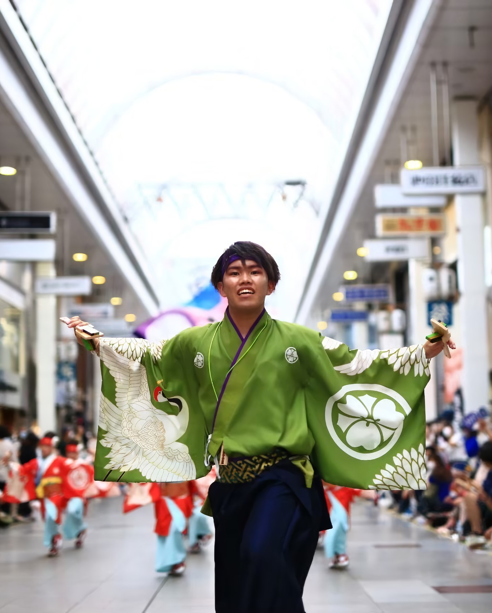

Activity
よさこい、学生団体、ハンドボールというチーム活動に尽力 しており、マイナーな分野にも挑戦することで多様な価値観 やそこにしかない面白さを感じている。
Yosakoi
よさこいの踊り子
特別な道具、さらしを振る役
高知県のお祭りであるよさこいという踊りに未経験の中挑戦しました。この思いは高知県を離れた地元の人たちに元気や笑顔を届けたいという気持ちからきています。この中で初めは練習についていけないこともあり、悔しい思いもしましたが動画撮影による踊りの分析や深夜練習によって技術を向上させていきました。その成果もあり、道具を用いた演舞も任せてもらえる様になりました。高知に来た際はぜひよさこい祭りにも訪れてみてはどうでしょうか

